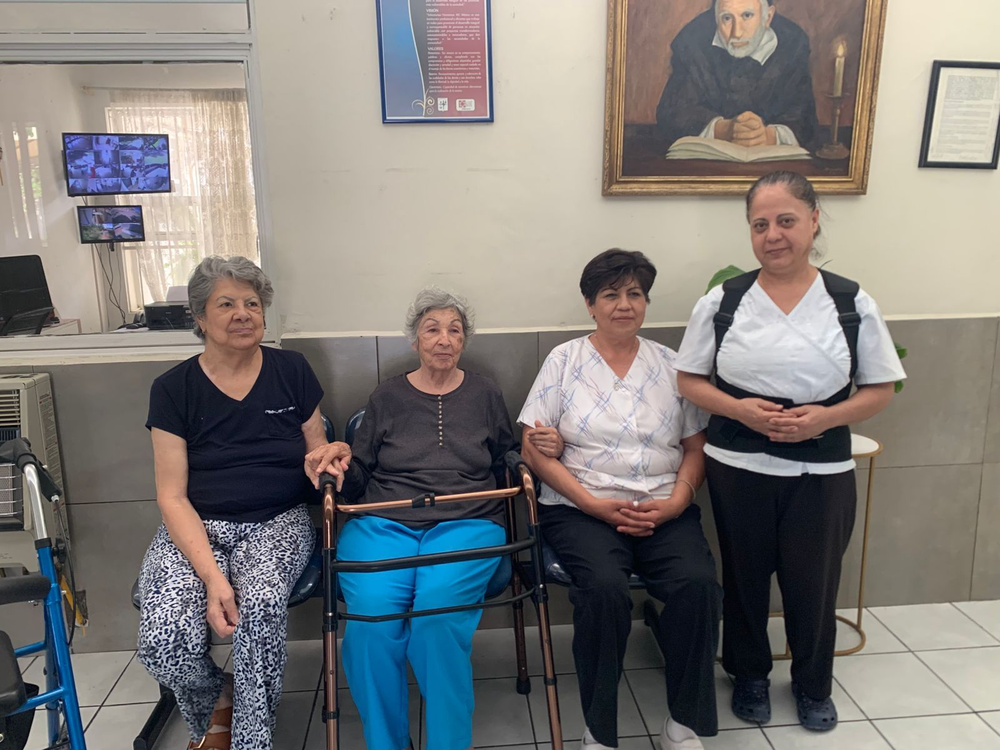

VOLUNTARIADO EN HOGAR SAN VICENTE
RESIDENCIA PARA MUJERES DE LA TERCERA EDAD
VISIÓN
Somos una institución que trabaja promoviendo el desarrollo integral de personas en situación vulnerable, en este caso a adultos mayores, con proyectos transformadores autosustentables e innovadoras, que dan respuesta a las necesidades de la comunidad.
MISIÓN
Voluntarias Vicentinas son mujeres con vocación de servicio que trabajan organizadamente contra las formas de pobreza y de exclusión a través de iniciativas y proyectos transformadores para el desarrollo integral de las personas más vulnerables de la sociedad.
SERVICIOS QUE OFRECEN
✔Cuidado hacia el adulto mayor
✔Comidas completas
✔Servicio de limpieza
✔Enfermeras las 24 hrs del día
✔Actividades variadas
✔Estabilidad y bienestar
Nosotros elegimos al Hogar San Vicente ya que nos llamaron la atención sus espacios y los servicios que le brindaban a las residentes, también vimos la oportunidad de sacar lo mejor de nosotros y proponer ideas nuevas a las actividades del lugar intentando con esto crear un impacto positivo en la rutina y visión de las residentes.
El voluntariado en un asilo es una experiencia profundamente humana y enriquecedora, tanto para quienes reciben tu compañía como para ti mismo. Muchas personas mayores viven en soledad, y una simple conversación, una sonrisa o el compartir un rato de juegos o lectura puede significarles el mundo. Al dedicar parte de tu tiempo a escucharlos, aprender de sus historias y brindarles afecto, generas un impacto emocional duradero en sus vidas. Además, esta experiencia fomenta la empatía, el respeto por otras generaciones y el valor de la presencia. Ser voluntario en un asilo no es solo dar, es también recibir lecciones de vida que no se aprenden en ningún otro lugar.
Hogar San Vicente: refugio cálido para mujeres mayores, con cuidados y actividades personalizadas.
General Rincón 4701, Chihuahua, México
614 424 0815
hogarsanvicentechih@gmail.com